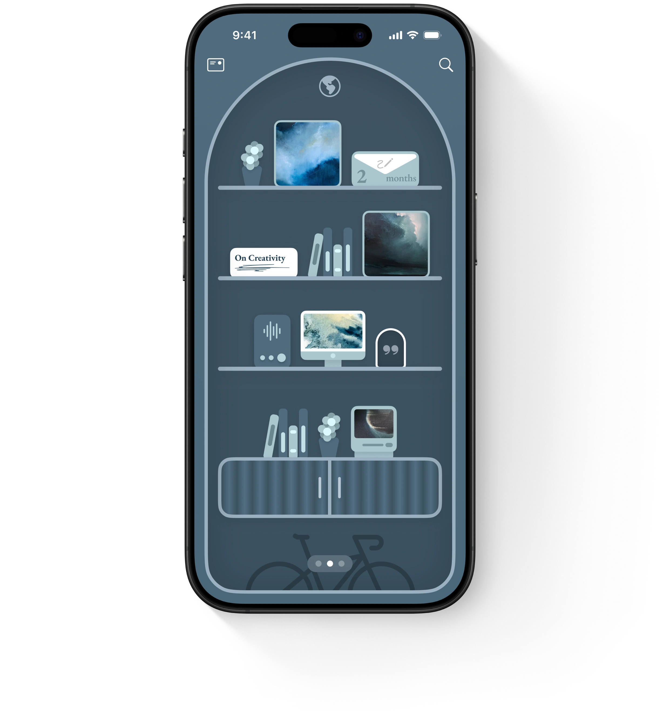

Home
Shelf
In Decision
About
Audio
Shelf
Your life.
Shelved beautifully.
Learn more

In Decision
The power to find clarity.
Learn more
What is Design?
Essential Principles
Learn more
Think Far, Stay Foolish.
Think Far, Stay Foolish.
Think Far, Stay Foolish.
Think Far, Stay Foolish.
A Guiding Ethos for the Next 100 Years
Learn more